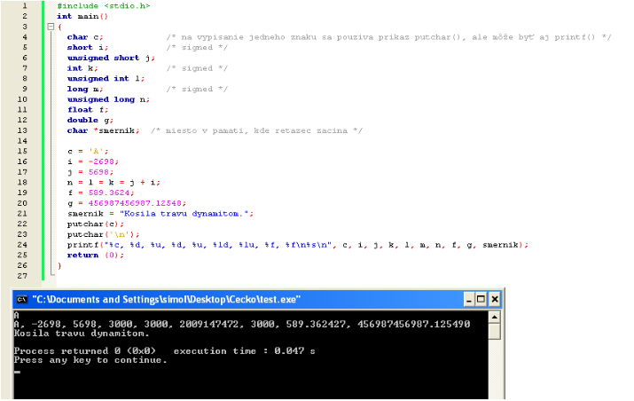

Programovací jazyk C je štandardný programovací jazyk vyvinutý začiatkom sedemdesiatych rokov. Autorom jazyka je Dennis Ritchie. Pôvodne bol určený pre použitie na operačných systémoch UNIX. Odvtedy sa rozšíril na mnohé iné operačné systémy a je jedným z najpoužívanejších programovacích jazykov. C sa cení vďaka jeho efektívnosti a je najpopulárnejším jazykom na písanie systémového softvéru, hoci sa používa aj na tvorbu aplikačného softvéru. Tiež sa bežne používa pri výuke programovania, hoci nie je určený pre úplných začiatočníkov.
Štruktúra programu
Štruktúra programu v jazyku C má obecný tvar
1.Skupina hlavičkových súborov štandardných funkcií
2.Definície užívateľských funkcií
3.Deklarácie globálnych premenných
4.Funkcia main
5.Ostatné užívateľské funkcie
Štandardné knižničné funkcie, ktoré sa vyskytujú v zdrojovom texte programu (časť 4, resp. 5), sú v celkovej štruktúre programu reprezentované svojimi hlavičkovými súbormi, spravidla uvedenými na začiatku programu (časť 1). Najjednoduchší úvodný program pre výpis textu na obrazovku má tvar
Matematické funkcie
math.h je hlavičkový súbor štandardnej knižnice jazyka C, ktorý sprístupňuje matematické funkcie (napr. goniometrické funkcie, logaritmy) a konštanty (napr. Ludolfovo číslo). Hlavičkový súbor sa do zdrojového kódu vkladá pomocou direktívy preprocesoru: #include
Funkcia pow
Funkcia pow (z anglického power, čo znamená umocňovať) je funkcia, ktorá umožňuje umocňovať reálny základ reálnym číslom. Pri programovaní sa často miesto tejto funkcie používa súčin niekoľkých premenných, napríklad {\displaystyle x^{3}=x\cdot x\cdot x} {\displaystyle x^{3}=x\cdot x\cdot x}. V prípade, že je potreba spočítať druhú odmocninu, možno použiť preddefinovanú funkciu sqrt, prípadne sa používa alternatíva v tvare pow(x, 1.0/2.0), čo je základ umocnenia na jednu polovicu. Toto sa používa aj u iných odmocnín. Pri počítaní nepárnej odmocniny je v matematike definovaná odmocnina zo záporného čísla, ale u tejto funkcie toto nie je definované. Tento problém možno obísť podmienkami if a else a pomocou funkcie abs(x)
Funkcia sqrt
Funkcia sqrt (z anglického square root, čo znamená druhá odmocnina) je ďalšia funkcia, ktorú je možné volať v tvare z = sqrt(x);. Pre túto funkciu nie je definovaná odmocnina zo záporného čísla. Tomuto problému možno zabrániť príkazom abs(x) alebo podmienkami if a else. Alternatíva tohoto príkazu je príkaz pow, kde je premenná umocnená na jednu polovicu.
Tabuľka s prehľadom najpoužívanejších príkazov tejto knižnice
Základné dátové typy
1.celočíselné
char - znak (má veľkosť 8 bite)
short - krátke celé číslo (má veľkosť 16 bite)
int - celé číslo (má veľkosť 16 bite alebo 32 bite)
long - dlhé celé číslo (má veľkosť 32 bite) (používa sa pri kompilátore, ktorý generuje šesťnásť bitový kód, alebo ak má operačný systém šesťnásť bitovú architektúru)
Môžu byť signed, teda záporné, nula a záporné celé čísla alebo unsigned, teda nula a kladné celé čísla.
2.reálne (s desatinnou čiarkou):
float - reálne číslo (má veľkosť 32 bite)
double - reálne číslo s dvojitou presnosťou (má veľkosť 64 bite)
long double - reálne číslo najväčšie (má veľkosť 80 bite)
Premenné
Zvykom je používať nasledovné identifikátory premenných:
i j k - indexy, parametre cyklov
c - ch - znaky
m n - čítače
f - r - reálne čísla
p_ - začiatok identifikátoru napr. p_plat
s - reťazce*
*neznamená to, že každý reťazec sa musí nazvať s, ale aby sa nestalo, že ak sa v programe vyskytne identifikátor s, nemôže to byť napr. identifikátor pre reálne číslo.
Pokiaľ sa má premenná v programe použiť, je treba jej priradiť nejakú hodnotu. Príklady:
j = 5;
d = 'z'
f = f + 3,14 * i;
Pretože priradenie je výraz, je možné niekoľkonásobné priradenie:
k = j = i = 2;
Vyhodnocuje sa sprava doľava:
k = (j = (i = 2))
Všetky premenné majú rovnakú hodnotu: 2
Údaje (hodnoty) priraďované premenným sa nazývajú konštanty a sú:
Binárne:
+ sčítanie
- odčítanie
* násobenie
/ delenie (celých aj desatinných čísiel) príklad:
(int) 9 / 2 = 4 (ako vidíte, nie je to presné)
(float) 9 / 2 = 4.500000 (6 desatinných miest)
% delenie modulo príklad:
9 % 2 = 1 (zvyšok po celočíselnom delení) Špeciálne:
inkrement ++ alebo -- príklad:
++výraz (výraz je najprv zväčšený o 1 a potom je táto nová hodnota vrátená ako hodnota výrazu)
výraz++ (vrátená je pôvodná hodnota výrazu a potom je výraz zväčšený o 1)
-- je ekvivalent ++
Priraďovacie:
i += j; (i = i + j)
i -= j; (i = i – j)
i *= j; (i = i * j)
i /= j; (i = i / j)
i %= j; (i = i % j)
a taj !!! Nepoužívajte operátory takto :
i + = j;
ale takto:
i += j;
niektorým kompilátorom to robí potiaže!!!
Vstup a výstup znakov
Na vstup a výstup jedného znaku sa používajú príkazy getchar() a putchar().
Je nutné si uvedomiť, že po volaní getchar() môžeme napísať veľa znakov, kým nestlačíme ENTER, putchar() vypíše len prvý znak, ostatné ignoruje.
Ďalej je dôležité, že premenná znak môže byť deklarovaná ako char, ale aj ako int. Časom uvidíš, že niekedy je nutné deklarovať int a niekedy char.
Formátovaný výstup
Používa sa príkaz printf().
printf("%d", i)
Kde '%d' označuje že argument je formátová špecifikácie, 'i' označuje deklarovanú a definovanú premennú. So znakom % môže byť uvedený celý rad formátových špecifikácií: c - znak (pozn. Jeden znak je lepšie čítať zn = getchar(); ako scanf(„%c“, &zn) ;) d - desiatkové číslo typu signed int ld - desiatkové číslo typu signed long u - desiatkové číslo typu unsigned int lu - desiatkové číslo typu unsigned long f - float (pre printf() tiež double) Lf - long double (Pozor, L musí byť veľké) lf - double (Pozor, niekedy sa nedá použiť pre printf()) x - hexadecimálne číslo malými písmenami napr.: 1a2c X - hexadecimálne číslo veľkými písmenami napr.: 1A2C o - osmičkové s - reťazec
Treba si uvedomiť, že počet argumentov výstupu môže byť viac než 2, to znamená že sa dá vytlačiť viac než jedna premenná. Príklad:

Vetvenie
Podemienky
Podmienky zapisujeme pomocou kľúčového slova if, za ktorým nasleduje logický výraz. Ak je výraz pravdivý, vykoná sa nasledujúci príkaz. Ak nie, nasledujúci príkaz sa preskočí a pokračuje sa až pod ním.
napr.
if (5 < 15)
printf("Pravda \n");
printf("Program zde pokracuje dal \n");
else
else vykoná nasledujúci príkaz alebo blok príkazov v prípade, že sa podmienka nevykoná napr.
int a = 0; // do a si pridáme 0
if (a == 0) // pokiaľ je a 0, dáme do a 1
a = 1;
else // pokiaľ je a 1, dáme do a 0
a = 0;
Switch
Zápis viac podmienok pod sebou (relatívne) zjednodušuje konštrukcia switch
napr.
double a;
double b;
int volba; // Mohli bychom použít char, abychom zbytečně nepoužívali moc místa
double vysledek;
printf("Vitejte v kalkulacce \n");
printf("Zadejte prvni cislo: \n");
scanf("%lf", &a);
printf("Zadejte druhe cislo: \n");
scanf("%lf", &b);
printf("Zvolte si operaci: \n");
printf("1 - scitani \n");
printf("2 - odcitani \n");
printf("3 - nasobeni \n");
printf("4 - deleni \n");
scanf("%d", &volba);
switch(volba)
{
case 1:
vysledek = a + b;
break;
case 2:
vysledek = a - b;
break;
case 3:
vysledek = a * b;
break;
case 4:
vysledek = a / b;
break;
}
if ((volba > 0) && (volba < 5))
printf("Vysledek: %f", vysledek);
else
printf("Neplatna volba \n");
printf("\n");
printf("Dekuji za pouziti kalkulacky");
return (EXIT_SUCCESS);
}
Práca so súbormi
Otvorenie súboru
Predtým, než sa súborom začneme pracovať, musíme ho otvoriť. K tomu slúži funkcia fopen ().
Pri otváraní súboru špecifikujeme mód, pre ktorý súbor otvárame. Najčastejšie je to "w" (zápis), "r" (čítanie) alebo "a" (pripisovania)
Zápis do suboru
Na začiatku zavoláme funkciu fopen (), ktoréj oznámime, že chceme otvoriť súbor dopis.txt v móde pre zápis.
Ak súbor neexistuje, bude vytvorený. Ak už existuje, bude prepísaný!
napr.
FILE * p_soubor = fopen("dopis.txt", "w");
fprintf(p_soubor, "Drahá Brynn,\n");
fprintf(p_soubor, "opatruj se, Malcolm unikl a jistě si pro mne brzy přijde jako pro prvního.\n");
fprintf(p_soubor, "Musíš navést Brandona, dovést ho k amuletu, klíčem k zaříkávadlu by možná\n");
fprintf(p_soubor, "mohla být levandulová růže.\n\n");
fprintf(p_soubor, "Kallak\n")
Zatvorenie súboru
Po dokončení práce so súborom ho treba zatvoriť. Asi by ste uhádli, že na to slúži funkcia fclose ().
Ak by sme súbor zabudli zavrieť, chápal by operačný systém ako že s ním stále pracujeme. Ostatné programy by ho nemohli používať a tiež by sme zbytočne plytvali zdrojmi, pretože operačný systém má na počet naraz otvorených súborov väčšinou nejaké limity.
Čítanie zo súboru
int main(int argc, char** argv) {
FILE * p_soubor = fopen("dopis.txt", "r");
if (p_soubor == NULL)
{
printf("Soubor se nepodařilo otevřít pro čtení, zkontrolujte prosím zda existuje.");
return 1;
}
char buffer[1024];
while (fscanf(p_soubor, " %1023[^\n]", buffer) != EOF)
{
printf("%s\n", buffer);
}
if (fclose(p_soubor) == EOF)
{
printf("Soubor se nepodařilo uzavřít.");
return 1;
}
return (EXIT_SUCCESS);
Otvorenie súboru je rovnaké až na zámenu módu z "w" (write) na "r" (read). Teraz budeme potrebovať pomocnú premennú, tzv. Buffer, do ktorého nám bude fscanf () riadku ukladať.
uffer sa robí dostatočne dlhý, väčšinou 1024 znakov. Samotné čítanie riadky je umiestnené vo while cyklu a pokračuje až kým fscanf () nevráti hodnotu EOF.
Tá signalizuje, že sme už dosiahli konca súboru. Formátovací reťazec je potrebné upraviť, inak by sa skenovanie zastavovalo o biele znaky (medzery) a my nechceme, aby sa zastavovalo len na konci riadkov (\ n) a my tak čítali naraz celé riadky.
Načítanú riadky z bufferu vypíšeme a pokračujeme znova. Na konci súbor uzavrieme.
Cykly
FOR cyklus
Tento cyklus má stanovený pevný počet opakovaní a hlavne obsahuje tzv. Riadiace premennú (celočíselnú), v ktorej sa postupne počas behu cyklu menia hodnoty.
Syntax (zápis) cyklu for je nasledovná: for (premenná; podmienka; príkaz)
premenna - je riadiaca premenná cyklu, ktoré nastavíme počiatočnú hodnotu (najčastejšie 0, pretože v programovaní všetko začína od nuly, nie od jednotky). Napr. teda i = 0. V céčko si musíme premennú aj vytvoriť niekde nad tým.
podmienka - je podmienka vykonanie ďalšieho kroku cyklu. Akonáhle nebude platiť, cyklus sa ukončí, Podmienka môže byť napr. I <10.
prikaz - hovorí nám čo sa má v každom kroku s riadiacou premennou stáť. Teda či sa má zvýšiť alebo znížiť. K tomu využijeme špeciálnych príkazov ++ a -, tie samozrejme môžete používať aj úplne bežne mimo cyklus, slúži na zvýšenie alebo zníženie premenné o 1.
#include
#include
int main(int argc, char** argv) {
int i;
for (i = 0; i < 3; i++)
{
printf("Knock! \n");
}
printf("Penny! \n");
return (EXIT_SUCCESS);
}
Cyklus prebehne 3x, spočiatku je v premennej i nula, cyklus vypíše "Knock" a zvýši premennú aj o jedna.
Potom beží rovnako s jednotkou a dvojkou.
Akonáhle je v i trojka, už nesúhlasí podmienka aj <3 a cyklus končí.
WHILE cyklus
While cyklus funguje inak, jednoducho opakuje príkazy v bloku kým platí podmienka. Syntax cyklu je nasledovné:
while (podmienka)
{
// príkazy
}
napr.
#include
#include
int main(int argc, char** argv) {
int i = 1;
while (i <= 10)
{
printf("%d ", i);
i++;
}
return (EXIT_SUCCESS);
}
Do-while cyklus
Je takmer rovnaký ako while, ale kontrolná podmienka je umiestnená až na koniec cyklu. Máme teda istotu, že minimálne raz cyklus vždy prebehne.
Cyklus do while není tak běžný ako předchadzajúce dva cykly, ale v niektorých situáciach je vhodnější.
Pole
Ak potrebujeme uchovávať väčšie množstvo premenných rovnakého typu, tento problém nám rieši poľa. Môžeme si ho predstaviť ako rad priehradiek, kde v každej máme uložený jeden prvok. Priehradky sú očíslované tzv. Indexy, prvý má index 0.
Programovacie jazyky sa veľmi líšia v tom, ako s poľom pracujú. V nižších kompilovaných jazykoch, ktorým je práve aj jazyk C, sa musí špecifikovať pevná veľkosť poľa v zdrojovom kóde, ktorá už za behu nemožno meniť.
Do poľa teda nie je možné pridávať ďalšie priehradky a preto musíme myslieť na to, aby nám vždy stačilo. Jazyk C nám ďalej umožňuje vytvoriť tzv. Dynamicky alokovanej poľa alebo využívať napr. Spojových zoznamov, aby sme tento problém obišli.
Pre hromadnú manipuláciu s prvkami poľa sa používajú cykly.
Pole deklarujeme ako bežnú premennú, iba za jej názov uvedieme hranaté zátvorky s počtom prvkov:
int pole[10];
K prvkom poľa potom pristupujeme opäť cez hranatú zátvorku, poďme na prvý index (teda index 0) uložiť číslo 1.
int pole[10];
pole[0] = 1;
Plniť pole takto ručne by bolo príliš pracné, použijeme cyklus a naplníme si pole číslami od 1 do 10. K naplneniu použijeme for cyklus:
int pole[10];
int i;
for (i = 0; i < 10; i++)
{
pole[i] = i + 1;
}
Aby sme pole vypísali, môžeme za predchádzajúci kód pripísať:
for (i = 0; i < 10; i++)
{
printf("%d ", pole[i]);
}
return (EXIT_SUCCESS);
}
Triedenie
Funkcia qsort()
Najjednoduchším riešením ako zotrieďiť dáta v programovacom jazyku C je použitie knižničný funkcie qsort ():
void qsort(void *base, size_t nmemb, size_t size, int (*compar)(const void *, const void *))
Prvým argumentom funkcie qsort () je "prázdny" ukazovateľ na pole, ktoré sa bude triediť.
Druhým argumentom je počet položiek (rozmer) pole, tretím argumentom je veľkosť jednej položky (v príklade je to počet bajtov typu int).
Posledným argumentom je ukazovateľ na funkciu (Compar), podľa ktorej sa budú porovnávať dva prvky z poľa.
int pole[POLOZEK];
int vetsi(int *a, int *b)
{
return *a - *b;
}
/* nezapomente nejdrive pole inicializovat nejakymi hodnotami */
qsort((void *) pole, POLOZEK, sizeof(pole[0]),
(int (*)(const void *, const void *)) vetsi);
Buble sort
Algoritmus bublinkového triedenia je pomerne jednoduchý ale nie moc efektívný. Prechádzate niekoľkokrát celé pole (odzadu do predu) a porovnávate susedné prvky.
Ak nie sú prvky správne zoradené za sebou, prehodíte ich. Takto najmenšie prvky "prebublávajú" smerom k začiatku (alebo to môže byť obrátene, ak chcete ). Začínate od konca poľa a "prebublávajú" smerom na začiatok.
Quick sort
Algoritmus quick sort (alebo tiež "radenie delením") je jeden z najefektívnejších. Princíp je asi nasledovný.
Radenie polia sa rozdelí na dve časti tak, aby v ľavej (prvý, horný hovorte tomu ako chcete ...) časti poľa boli všetky čísla menšie, než čísla v pravej časti.
Aby sa to dobre programovalo, vezme sa jeden prvok z poľa (napríklad prostredný, to je fuk), hovorme mu pivot a hľadá sa a triedi polia tak, že čísla z ľavej časti sú menšie a čísla z pravej časti sú väčšie ako pivot.
Na oba úseky sa použije rekurzívne rovnaký algoritmus, a tak sa pole rozdeľuje na menšie a menšie úseky, až je rozdelené na úseky dĺžky 1, čím je pole zotriedené.